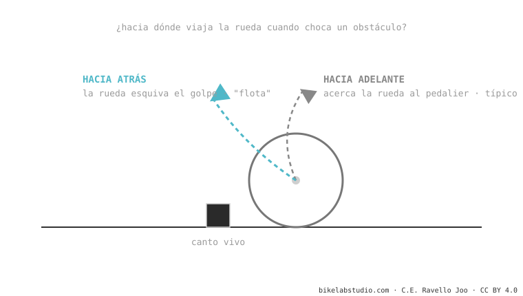

El axle path es el camino que dibuja el eje de la rueda trasera al comprimirse la suspensión. Puede ir hacia adelante (lo común: acerca la rueda al pedalier) o hacia atrás (rearward: la aleja). El camino hacia atrás traga mejor los golpes de canto vivo —por eso las bicis high-pivot "flotan"— pero estira la cadena (chain growth). Es una pieza de la cinemática de suspensión.
Dos bicis pueden tener el mismo recorrido y absorber los golpes de forma totalmente distinta. Buena parte de eso lo decide por dónde viaja la rueda.
Cuando tu rueda choca una raíz, ¿prefieres que se vaya hacia arriba (de frente contra el golpe) o hacia atrás-arriba (esquivándolo)? Esa decisión, hecha ingeniería, es el axle path.
Al comprimirse la suspensión, el eje trasero no sube en línea recta: traza un arco. Hacia dónde apunta ese arco lo deciden las posiciones de los pivotes del cuadro.

Un golpe de canto vivo (una raíz cruzada, un escalón) empuja la rueda hacia atrás-arriba. Si el axle path va en esa misma dirección, la rueda acompaña el golpe en vez de frenarlo: pierdes mucha menos velocidad y la trasera se siente más "tragona". Esa es la magia de las high-pivot. Pero como la rueda se aleja del pedalier, la cadena se estira y aparece el pedal kickback — por eso esas bicis llevan una polea (idler) que lo neutraliza.
El camino que sigue el eje trasero al comprimirse: hacia adelante (común) o hacia atrás (rearward). Lo deciden los pivotes.
Su axle path va muy hacia atrás: la rueda esquiva el golpe en lugar de chocarlo. El precio es chain growth, que controla la polea idler.
Dinos el modelo y te decimos hacia dónde viaja su rueda y qué carácter le da. Escríbenos por WhatsApp
© 2026 BikeLab Studio. Contenido bajo CC BY 4.0: puedes copiarlo, traducirlo y publicarlo, incluso con fines comerciales. La cita es obligatoria. Sin atribución, la licencia se revoca de forma automática (CC BY 4.0, §6.a) y el uso pasa a ser una infracción de derechos de autor: solicitamos la retirada del contenido y su desindexación. · Diseño y propiedad: Carlos Ravello Joo